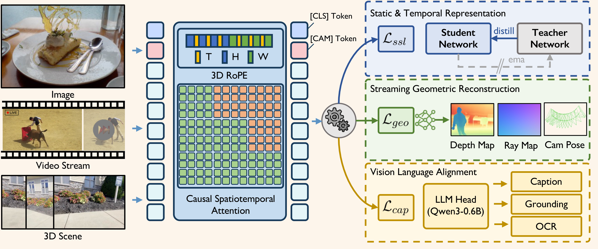
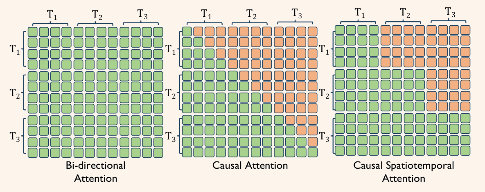
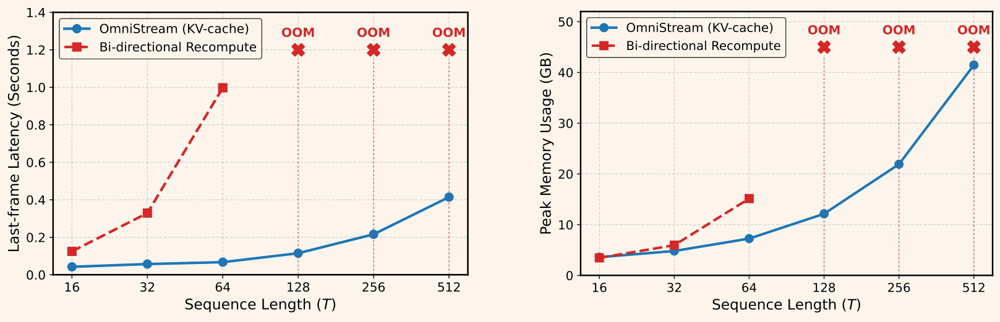

Modern visual agents require representations that are general, causal, and physically structured to operate in real-time streaming environments. However, current vision foundation models remain fragmented, specializing narrowly in image semantic perception, offline temporal modeling, or spatial geometry. This paper introduces OmniStream, a unified streaming visual backbone that effectively perceives, reconstructs, and acts from diverse visual inputs. By incorporating causal spatiotemporal attention and 3D rotary positional embeddings (3D-RoPE), our model supports efficient, frame-by-frame online processing of video streams via a persistent KV-cache. We pre-train OmniStream using a synergistic multi-task framework coupling static and temporal representation learning, streaming geometric reconstruction, and vision-language alignment on 29 datasets. Extensive evaluations show that, even with a strictly frozen backbone, OmniStream achieves consistently competitive performance with specialized experts across image and video probing, streaming geometric reconstruction, complex video and spatial reasoning, as well as robotic manipulation (unseen at training). Rather than pursuing benchmark-specific dominance, our work demonstrates the viability of training a single, versatile vision backbone that generalizes across semantic, spatial, and temporal reasoning, i.e., a more meaningful step toward general-purpose visual understanding for interactive and embodied agents.
Causal spatiotemporal attention + 3D-RoPE turn a pre-trained image ViT into an efficient online streaming backbone with KV-cache support.
Synergistic training across 29 datasets spanning self-supervised learning, geometric reconstruction, and vision-language alignment (~200M frames).
A single frozen backbone achieves competitive results across perception, 3D reconstruction, VLM reasoning, and robotic manipulation.


OmniStream is built upon a pre-trained DINOv3 ViT-L, extended with two key modifications: (i) causal spatiotemporal attention that enforces strict temporal causality and enables efficient frame-by-frame inference via a persistent KV-cache; (ii) 3D rotary positional embeddings (3D-RoPE) that extend 2D spatial RoPE to a consistent spatiotemporal relative encoding.

A naive Transformer that attends over all frames violates causality and is inefficient for streaming. We apply spatiotemporal self-attention with a causal temporal mask, so tokens at time t may only attend to tokens from times ≤ t. This enables streaming inference: when a new frame arrives, we compute its queries and reuse cached keys/values from past frames, achieving online processing without recomputing attention over the full stream.

Thanks to our causal temporal attention mechanism, OmniStream natively supports KV-caching during inference. This allows the model to process incoming video streams frame-by-frame with O(T) temporal complexity per step, avoiding redundant re-computation. Furthermore, 3D-RoPE enables zero-shot length extrapolation (e.g., 110 frames) far beyond the training horizon of T=16 frames.

We train OmniStream with three complementary objectives that jointly encourage representations that are temporally coherent, geometrically grounded, and language-aligned:
Student-teacher distillation that unifies image and causal video modeling through global and patch-level objectives.
Feed-forward geometric heads to inject explicit 3D constraints, ensuring features encode physical scene structure.
A lightweight language decoder trained on captioning, OCR, and grounding aligns visual tokens with linguistic concepts.
We evaluate OmniStream across five domains with a strictly frozen backbone: image & video probing, streaming geometric reconstruction, visual backbone for VLMs, and visual backbone for VLA policies. The model is pre-trained on ~200M frames from 29 datasets, covering both 2D image and video datasets, 3D/4D datasets and visual-language datasets (more details in the paper).
| Benchmark | Metric | Ours | DINOv3-L | V-JEPA2-L | CUT3R | LLaVA-Video | OpenVLA |
|---|---|---|---|---|---|---|---|
| ImageNetcls | ACC@1 ↑ | 84.7 | 86.7 | - | - | - | - |
| NYUv2depth | RMSE ↓ | 0.377 | 0.377 | - | - | - | - |
| ADE20Kseg | mIoU ↑ | 49.1 | 51.5 | - | - | - | - |
| SSv2act | ACC@1 ↑ | 68.5 | 54.0 | 73.7 | - | - | - |
| K400act | ACC@1 ↑ | 85.7 | 83.6 | 85.1 | - | - | - |
| DAVIS'17vos | J&F ↑ | 71.6 | 73.2 | 44.2 | - | - | - |
| Sinteldepth | absRel ↓ | 0.314 | - | - | 0.421 | - | - |
| BONNdepth | absRel ↓ | 0.072 | - | - | 0.078 | - | - |
| ScanNetpose | ATE ↓ | 0.076 | - | - | 0.099 | - | - |
| VideoMMEvqa | Acc. ↑ | 60.7 | - | - | - | 61.8 | - |
| VideoMMMUvqa | Acc. ↑ | 40.0 | - | - | - | 38.7 | - |
| PerceptionTestvqa | Acc. ↑ | 68.9 | - | - | - | 67.6 | - |
| EgoSchemavqa | Acc. ↑ | 60.9 | - | - | - | 57.3 | - |
| VSI-Benchvqa | Acc. ↑ | 70.6 | - | - | - | 35.6 | - |
| CALVINmani | Avg. Len ↑ | 3.89 | - | - | - | - | 2.55 |
| Simpler-Bridgemani | SR% ↑ | 45.8 | - | - | - | - | 53.7 |
Holistic evaluation. We compare OmniStream across 5 domains with a frozen backbone. "-" indicates a specialized baseline is not natively applicable to the given task.
We investigate the contribution of each pre-training objective. The results demonstrate that our unified multi-task formulation is not merely a concatenation of independent losses, but a synergistic framework where semantic, dynamic, and geometric objectives mutually reinforce the backbone.
| Method | SSv2 ↑ | DAVIS ↑ | ImageNet ↑ | NYUv2 ↓ | ADE20k ↑ | VSI-Bench ↑ | VideoMME ↑ | CALVIN ↑ |
|---|---|---|---|---|---|---|---|---|
| OmniStream (Full) | 69.3 | 71.6 | 85.2 | 0.379 | 49.6 | 57.3 | 54.1 | 3.80 |
| w/o VideoSSL | 63.0 | 67.7 | 85.4 | 0.420 | 47.2 | 57.9 | 55.8 | 3.42 |
| w/o 3D Geometry | 68.4 | 69.7 | 85.0 | 0.471 | 42.3 | 52.5 | 53.8 | 3.34 |
| w/o Captioning | 67.4 | 71.0 | 84.4 | 0.395 | 46.9 | 44.9 | 45.0 | 2.38 |
Ablation study. Each pre-training objective contributes uniquely: VideoSSL drives temporal dynamics, 3D Geometry is prerequisite for spatial intelligence and embodied control, and Captioning is critical for VLM integration.